Los bosques de pinos, oyameles y de encinos crecen en las montañas donde no hace mucho frío ni mucho calor y donde llueve sólo una parte del año.
Las plantas y animales de estos bosques se parecen mucho a las especies de Canadá y Estados Unidos, pero también hay muchas especies únicas de México.
Cotorra Serrana de Occidente
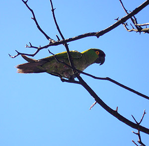
Al igual que mi pariente de oriente vivo en los bosques y no en las selvas, como los demás pericos. Me alimento de las riquísimas semillas de pinos conocidos como piñones y de bellotas de encino. Anido en agujeros hechos por los trabajadores pájaros carpinteros en el tronco de grandes árboles.
Cotorra Serrana de Oriente
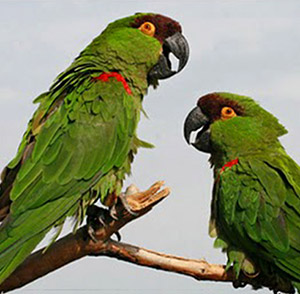
Soy, junto con mi pariente del occidente, una cotorra muy, pero muy, especial ya que vivo en los bosques y no en las selvas, como los demás parientes. Me alimento de sabrosas semillas de pinos conocidos como piñones y de bellotas de encino. Anido en agujeros en las paredes rocosas de las montañas.
Pinabete de Nuevo León
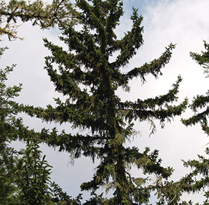
Soy pariente de los pinos y oyameles y me parezco mucho a estos últimos. Vivo cerca de los arroyos en las montañas del centro de Nuevo León. A diferencia de los oyameles, mis conos no se deshacen, pero también les encantan a las comelonas ardillas.
Cóndor de California
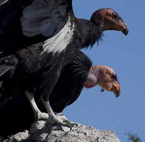
Aunque me parezco a mis parientes los zopilotes soy el único cóndor en el país. Me alimento de animales muertos, igual que tú ¿quieres un pedacito? Mi desplumada cabeza me ayuda a prevenir enfermedades que se pudieran pasar de mi alimento a las plumas. Mis alas son muy grandes y me permiten planear por las alturas y buscar alimento en una gran región.
Águila Real
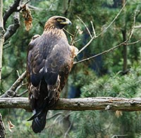
Soy una de las águilas más grandes del país y símbolo nacional. Vivo en bosques y pastizales y me alimento de conejos, liebres y otros animales a los que detecto desde muy lejos con mi poderosa vista. Anido en lo alto de los árboles o en riscos. Mis pequeños polluelos, son de color blanco.
Ardilla
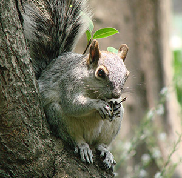
Soy un roedor con gran habilidad para trepar y correr sobre las ramas de los árboles. Utilizo mi gran cola para mantener el equilibrio y para protegerme del frío o del calor. Me encantan las semillas y los hongos. Siempre estoy alerta ya que soy parte del menú de halcones, zorras y muchos otros animales que comen carne de ardilla.
Lobo Mexicano
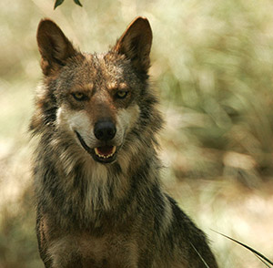
Soy uno de los mamíferos depredadores más grandes del bosque. Me alimento de tiernos venados, pecaríes, guajolotes y conejos, ¡pura carnita sin grasa! Vivo en grupos familiares y nos comunicamos mediante extraordinarios aullidos que se escuchan muy lejos. Todos los perros son mis parientes.
Oso Negro
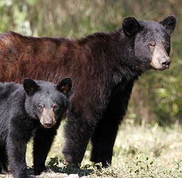
Soy el único oso que vive en México. Antes compartía el hogar con mi pariente el gigantesco Oso Gris. Me alimento principalmente de frutillas y raíces, algunas plantas y de vez en cuando me desayuno una que otra ardilla. Cuando trepo a los árboles dejo mis huellas marcadas en el tronco.
Encino
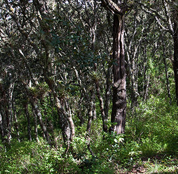
Soy un encino rojo. Mi familia es muy diversa en México. Tenemos hojas anchas y gruesas de diversas formas y flores pequeñas. Nuestras semillas se llaman bellotas les encantan a las traviesas ardillas, quienes las almacenan para recuperarlas cuando tienen hambre.
Venado Cola Blanca
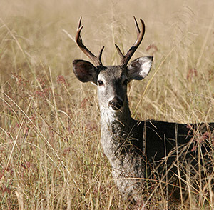
Soy un mamífero herbívoro que vivo en una gran variedad de lugares. Y no te rías eh, mi cola, bueno mi colita porque es pequeña, es de color blanco. Me alimento de hierbas y arbustos. Los machos tenemos astas en la cabeza. No son cuernos como los de los toros o borregos. Nosotros los producimos cada año y no son de hueso. Soy alimento de pumas y lobos y de cazadores, por lo que siempre ando muy alerta.
Zacatuche
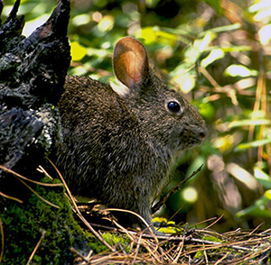
Soy el conejo más pequeño de México y vivo en una zona muy reducida en la parte alta de los volcanes cerca de la Cd. de México. Me alimento de los pastos conocidos como zacates y por eso me llaman zacatuche. Además me escondo entre los zacates para que no me encuentren las hambrientas comadrejas. Mis amigos me llaman Teporingo.
Trucha Arcoiris
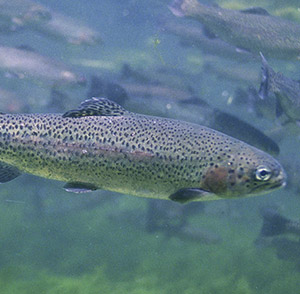
Vivo en los arroyos con agua fría de las montañas. Me gusta dar saltos fuera del agua de vez en cuando ¡splash! Me alimento de pequeños insectos, de acociles, y de peces pequeños. También como huevos de otros peces y de ranas. Soy el plato favorito de muchos animales incluyendo los seres humanos.
Gorrión Serrano
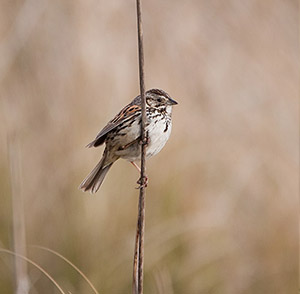
Soy uno de los pájaros menos abundantes en México. Vivo en los pastizales que se encuentran por arriba de los bosques en las altas montañas. Me alimento de semillas y pequeños insectos que a veces me cuesta trabajo atrapar. Construyo mi nido muy escondido entre los zacates, para que no lo encuentren los depredadores.
Pino
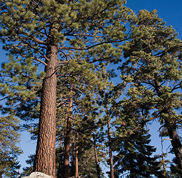
En México vivimos muchos pinos distintos ¿verdad tú? -Sí. Nuestras hojas son delgadas y largas en forma de aguja. No tenemos flores sino que nuestras semillas las guardamos en conos o piñas. Cuando nuestras semillas son de gran tamaño se llaman piñones y son muy sabrosas ¿verdad tú? Bueno, sí, eso nos han dicho las ardillas.
Mariposa Monarca
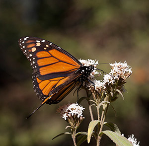
Soy un insecto volador que me alimento de néctar de las flores cuando adulto, pero cuando soy oruga me alimento de las hojas de una planta conocida como algodoncillo. Cada año volamos desde Canadá y Estados Unidos millones de mariposas Monarca para pasar cinco meses en el centro de México. No es por presumir, pero es la migración más larga y más numerosa de cualquier insecto.